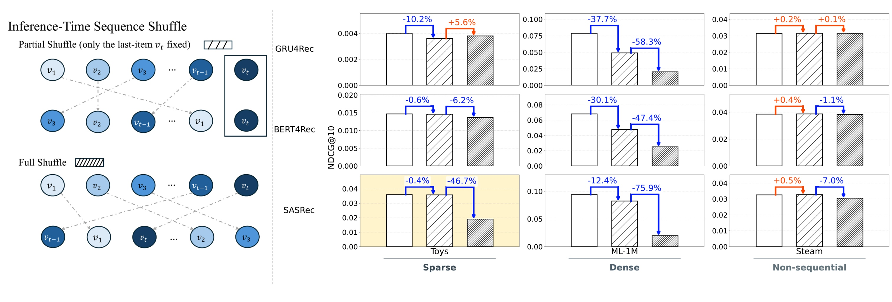
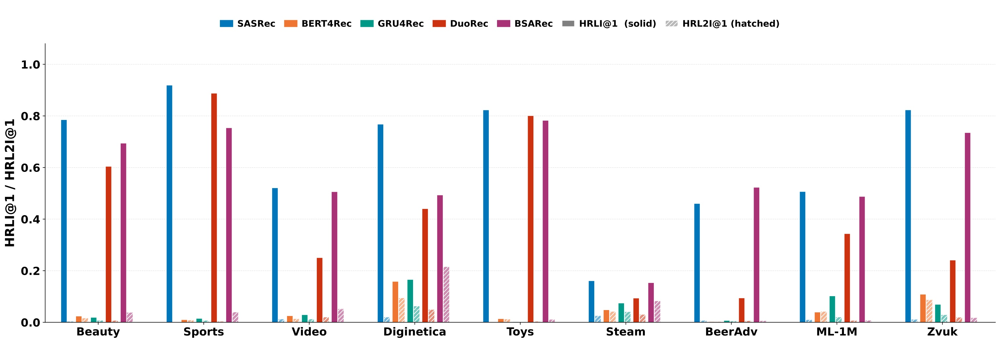
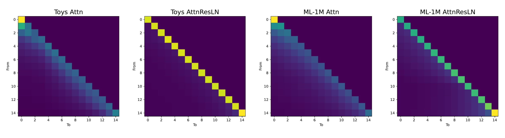
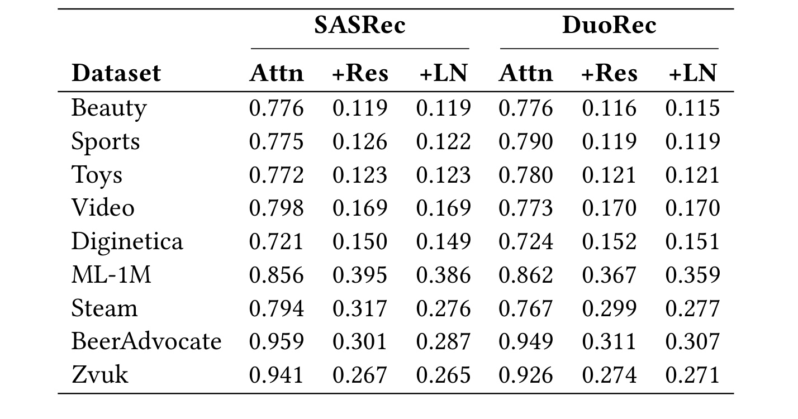
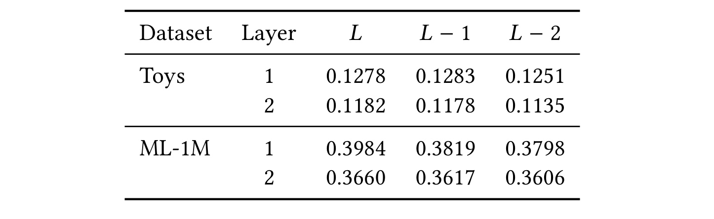
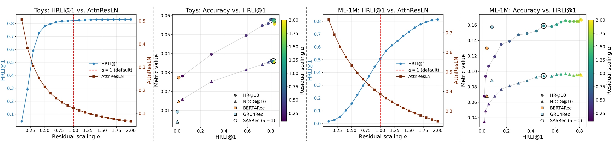
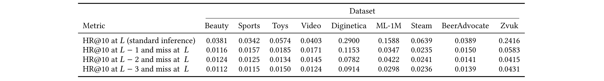
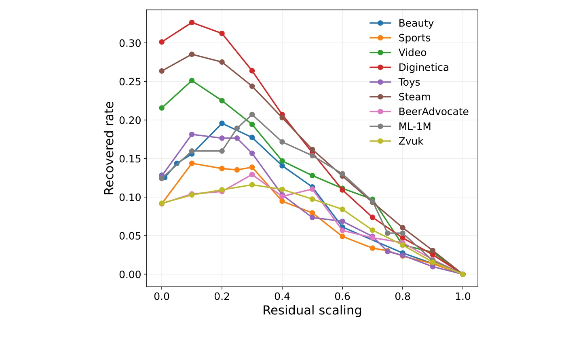
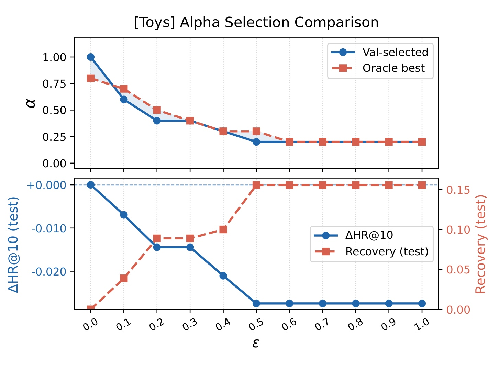

Residual Dominance：因果自注意力推荐器末项依赖的结构性解释
论文原题为 Residual Dominance as a Structural Account of Last-Item Reliance in Causal Self-Attention Recommenders，作者 Keito Kozaki、Keigo Sakurai、Ren Togo、Takahiro Ogawa 与 Miki Haseyama 均来自北海道大学。论文于 2026 年 8 月 14 日提交 arXiv，并被 RecSys 2026 接收；论文入口为 arXiv:2608.14021。作者已公开官方代码仓库，其中包含九个数据集的扩展曲线、分析脚本和补充推导。本文的重点不是提出一个新的 SOTA 推荐器，而是解释已经训练好的 SASRec 风格模型在预测时为什么会把表示与排序过度锚定到最后一次交互。
因果自注意力序列推荐器在预测时常高度依赖最近一次交互，但这种行为究竟如何结构性地写进用于预测的表示，仍缺少解释；仅观察注意力权重，也无法说明为什么最终位置的影响会相对紧邻位置突然跃升。
1. 背景和问题
1.1 最终位置既是序列元素，也是唯一预测接口
序列推荐的标准任务，是给定用户 $u$ 的按时间排序交互序列 $S_u=(v_1,v_2,\ldots,v_t)$，估计下一物品 $v_{t+1}$ 的分布：
符号解释：$\mathcal V$ 是物品全集，$v_t$ 是最近一次交互，$\Theta$ 是模型参数。SASRec 用因果自注意力编码每个位置，却只读取最终位置 $L=t$ 的输出去完成 next-item ranking。于是，$L$ 同时具有两种身份：它一方面只是序列中的一个真实物品位置，另一方面又是整条序列进入预测头的唯一接口。若该位置的块输出保留了大量同位置输入，最近物品就拥有一条不必经过跨位置聚合的直达路径；较早物品即便已经被注意力读取，也未必能以足够大的幅度进入最终表示。
已有工作常用“用户近期兴趣更重要”或“注意力集中在局部邻域”描述这一现象，但两种说法都没有触及作者关心的表示问题。注意力权重回答的是模型把权重放在哪里，不等于各位置经过 value 变换、残差相加和层归一化后，究竟有多少贡献留在预测向量里。更关键的是，平滑变化的 attention pattern 很难解释一种不连续行为：末项常被排到第一名，倒数第二项却远没有类似待遇。论文因此把研究问题限定为预测时的结构表达，而不声称识别数据分布、训练目标或优化过程为何让末项具有预测力。
1.2 位置打乱先定位“最后一格”的特殊性
第一种诊断是推理期位置打乱。作者比较三种输入：原始时间顺序；只固定 $v_t$、随机打乱前面所有交互的 partial shuffle；连 $v_t$ 也一起打乱的 full shuffle。前两者的差异反映模型是否真正利用了早期交互的相对顺序，后两者的差异则把“末项仍处在预测接口”这一条件拆掉。它不是训练增强，也不修改权重，只是在同一训练模型上改变输入位置，用性能敏感性定位哪一部分顺序最关键。

Figure 1 选择 Toys、ML-1M 和 Steam 代表稀疏、稠密与弱序列三种场景。左侧流程图明确区分两种扰动：partial shuffle 的深色末项始终留在 $L$，full shuffle 则允许它移动。右侧柱图显示，在 Toys 与 ML-1M 上，SASRec 对只打乱早期位置相对迟钝，但当末项也离开 $L$ 时性能明显下降；这正是“最终位置特权”而非一般顺序敏感性的证据。ML-1M 的 partial shuffle 仍有一定损失，说明稠密长序列不是完全忽略历史；Steam 上两类打乱都很弱，则提醒我们数据本身若缺少稳定序列信号，结构诊断不会自动制造明显效果。图中 BERT4Rec、GRU4Rec 的变化也表明不同预测接口与归纳偏置会改变扰动响应，因此结论不能简化为“所有序列模型只看最后一个物品”。
1.3 HRLI 的口径、价值与陷阱
打乱实验测的是对扰动的敏感性，无法直接告诉我们标准推理生成的榜单是否把输入末项重新排在最前。作者因此采用 Hit Rate of the Last Item，并定义：
符号解释：$\mathcal D$ 是评测序列集合，$\mathbb I[\cdot]$ 是指示函数，$\mathrm{Top}\text{-}K(S_u)$ 是模型对序列输出的前 $K$ 个物品。HRL2I 用 $v_{t-1}$ 替换 $v_t$，从而比较相邻两个输入位置被重新推荐的频率。正文聚焦 $K=1$，因为末项直接位居第一是最极端也最容易解释的局部化表现。

Figure 2 横跨九个数据集和五类模型。SASRec、加入对比目标的 DuoRec、频域自注意力 BSARec 的实色 HRLI@1 柱通常远高于斜线 HRL2I@1；BERT4Rec 与 GRU4Rec 的两柱差距明显较小。这里真正有解释力的不是某个绝对高度，而是 $L$ 与 $L-1$ 只相隔一步却出现的大落差，它与 Figure 1 的扰动结果互补：一个观测输入顺序被改变后的性能，另一个观测标准推理榜单的定位倾向。必须注意，HRLI/HRL2I 为了让已交互物品仍有机会进入榜单，刻意不使用 filter-seen；因此它们是诊断量，不是常规离线准确率，也不是用户会重复消费的反事实概率。对 Diginetica、Zvuk 等重复消费显著的领域，末项再次出现可能同时包含合理偏好和结构偏置，更不能把高 HRLI 直接判作错误。
两类诊断合起来只完成“现象定位”：因果自注意力模型在最终位置表现出高度局部化的末项依赖。它们尚未解释这种现象由哪个网络组件表达，也不能排除训练目标、数据 recency、因果 mask、位置编码与优化轨迹的共同影响。论文的下一步因此不是再设计一个相关性指标，而是把完整 attention block 按输入位置拆开，比较 attention、residual 与 layer normalization 各自怎样改变上下文贡献。
2. 方法
2.1 预测期定位：位置打乱与 HRLI
原文方法链从行为层开始。对每个测试序列，位置打乱在参数固定条件下构造 chronological、partial shuffle 和 full shuffle 输入，再用同一个预测头计算 HR@10、NDCG@10。只固定末项的处理保持了 $v_t$ 与最终预测接口的绑定，同时破坏此前交互的相对顺序；全打乱进一步切断这条绑定。partial 与 full 之间若出现大差距，就说明关键变化集中在最终位置是否仍承载最近物品，而非所有历史顺序被均匀使用。这项诊断回答“模型对哪种位置破坏最敏感”，但单次扰动仍可能受数据序列性影响，所以作者随后用无需扰动的 HRLI/HRL2I 观察榜单结构。
HRLI 的输入是标准推理分数，输出是指定输入位置物品进入 Top-$K$ 的频率。作者在全部数据上计算 HRLI 时关闭 filter-seen，而在主任务 HR@10/NDCG@10 中使用 full-catalog ranking，并通常过滤历史物品；Diginetica 与 Zvuk 因重复消费特性是主任务过滤规则的例外。这个口径分离非常重要：HRLI 负责定位 recency-localized ranking，标准指标负责衡量下一物品预测。两者不能互换，也不能用 HRLI 的下降单独宣称推荐质量改善。
2.2 完整注意力块的范数分解与残差主导
行为现象确立后，作者转向 SASRec 的完整注意力块。位置 $i$ 的块输出写为：
符号解释：$x_i$ 是位置 $i$ 的输入表示，$X$ 是整段可见序列，$\mathrm{Attn}(x_i,X)$ 是因果多头注意力汇聚的输出，$\mathrm{LN}$ 是层归一化，$x_i$ 的加法项就是残差路径。单看 attention weight 会遗漏 value 向量范数和后续残差、归一化，因此作者沿用 norm-based analysis，把最终表示继续分成来自每个输入位置的向量贡献：
符号解释：$F_i(x_j)$ 表示输入位置 $j$ 对输出位置 $i$ 的向量贡献，多头注意力已被合并为一个表示，不需要再对 head 做简单权重平均。接着定义上下文 mixing ratio：
符号解释：分子汇总所有跨位置贡献的范数，分母汇总包含同位置在内的全部贡献；$r_i$ 越高表示输出越依赖上下文混合，越低表示同位置自信息保留越强。作者分别在 attention-only、加入 residual、再加入 LN 三个阶段计算该量。Residual dominance 指的正是：attention 本已聚合大量跨位置内容，但残差相加把完整块输出的相对范数突然拉回同位置贡献。

Figure 3 将这个定义画成四个贡献矩阵。Toys 与 ML-1M 的 attention-only 热图都在因果三角区域内分散着跨位置亮度，说明注意力确实读取了历史；加入 residual 和 LN 后，能量明显压缩到对角线，同位置贡献成为最亮结构。Toys 的 AttnResLN 对角尤其尖锐，和其较低 mixing ratio 一致；ML-1M 仍保留更多三角区域背景，反映长而稠密的序列有更强上下文混合。图并没有证明模型“忘记”了所有过去信息，因为非对角贡献仍存在；它证明的是这些贡献在最终向量范数中的相对份额被同位置残差显著稀释。由于 SASRec 只从 $L$ 输出预测，这种全位置普遍存在的自保持，在预测接口处被锚定为最后一次交互的直达信号。
2.3 残差缩放探针、恢复条件与验证集选择
为了检验结构量与排序行为是否随残差强度系统变化，作者在不重训练的前提下改写每层每个位置的推理计算。标准残差为
缩放探针则为
符号解释：$h_i$ 是残差相加后的表示，$\alpha$ 控制同位置输入的保留强度，$\alpha=1$ 是原模型标准推理；减小 $\alpha$ 会相对放大跨位置 attention 输出在完整表示中的占比。实验同时追踪 AttnResLN mixing ratio、HRLI@1、HR@10 与 NDCG@10，还检查在 $L$ 漏召但 $L-1/L-2/L-3$ 已命中真值的序列中，缩放后 $L$ 是否能够恢复真值。
这里的 $\alpha$ 不是训练出来的新参数，论文也没有提出围绕它重训模型；它是在既有权重上施加的推理期敏感性干预，用于检验结构解释和展示可控性。作者明确拒绝把曲线称为严格因果识别，因为同一干预同时改变每层所有位置的表示，且结构变化与准确率变化并存。验证集选择只是在允许精度损失 $\varepsilon$ 内重现实验权衡：
符号解释：$\mathrm{Recovery}_{\mathrm{val}}$ 是验证集条件样本的恢复率，$\varepsilon$ 是容许的 HR@10 相对下降，$\alpha^*$ 是约束内恢复率最高的缩放值。这个规则能避免偷看测试集，却仍没有解决全量精度下降、请求级识别可恢复样本或线上收益验证，因此只能算诊断现象的可复现演示。
3. 实验结果
3.1 数据、模型与评测口径
实验覆盖 Beauty、Sports、Video、Diginetica、Toys、Steam、BeerAdvocate、ML-1M、Zvuk 九个公开数据集，跨度从平均序列长度约 8 的稀疏电商数据，到平均长度 419.8、约 808 万交互的 Zvuk。所有数据做 5-core 过滤并去除连续重复物品；这一步减少了由同一物品连续点击直接造成的表面 recency。作者使用 Global Time Split，训练与验证合计占前 90% 的时间数据，测试保留后段，并采用 GTS-Last target、GT-based validation 与全目录排序，避免 leave-one-out 把未来交互泄漏进训练和采样负例扭曲指标。
模型层面，GRU4Rec、SASRec、BERT4Rec 分别代表循环、因果自注意力与双向 mask 范式；DuoRec 检查加入对比学习损失后结构是否仍在，BSARec 检查频域自注意力变体。行为诊断覆盖这些模型，但范数分解主要用于 SASRec 与具有兼容块结构的 DuoRec。作者没有把 BERT4Rec 纳入同构结构比较：它从虚拟的 MASK 位置预测，残差输入并不是一个真实末项，因此“保持同位置输入”不再等同于“保存最后一次交互”。这是接口定义导致的不可比，而不是 BERT4Rec 被实验遗漏。
3.2 残差而不是层归一化造成主要混合率下降
Table 2 是结构分析的主结果。SASRec 的 attention-only mixing ratio 在九个数据集上为 0.721 至 0.959，说明 attention 输出确实大量混入别的位置；加 residual 后降到 0.119 至 0.395。以 Toys 为例，0.772 变为 0.123；Beauty 从 0.776 变为 0.119；即使混合较强的 ML-1M 也从 0.856 降到 0.395。随后加入 LN 的值大多与 +Res 接近，例如 Toys 仍为 0.123，Beauty 仍为 0.119，ML-1M 仅从 0.395 到 0.386。因而主要断点发生在残差相加，而非归一化。

表中 DuoRec 重复了同一模式：Beauty 的 Attn/+Res/+LN 为 0.776/0.116/0.115，ML-1M 为 0.862/0.367/0.359，BeerAdvocate 为 0.949/0.311/0.307。这说明残差主导并不依赖 SASRec 的原始训练损失；加入对比目标后，完整块仍从跨位置混合转向强自保持。不同数据集的绝对值差异也不能忽略：短稀疏电商序列的 +LN mixing ratio 约 0.12 至 0.17，而 ML-1M、Steam、BeerAdvocate、Zvuk 多在 0.26 至 0.39。论文据此主张的是稳定的阶段性骤降，而不是所有数据最终落到同一个混合率。范数比还只反映贡献幅度，不直接判断某个非末位置贡献是否包含正确语义，所以需要后续命中与恢复实验连接结构和预测。
Table 3 进一步询问：残差主导会不会只发生在最终位置或某一层？Toys 第一层 $L/L-1/L-2$ 分别为 0.1278/0.1283/0.1251，第二层为 0.1182/0.1178/0.1135；ML-1M 第一层为 0.3984/0.3819/0.3798，第二层为 0.3660/0.3617/0.3606。位置之间的差远小于 attention 到 +Res 的阶段差，而且 ML-1M 的 $L$ 甚至略高于前两个位置。

这张表修正了一个很容易产生的误解：residual dominance 不是网络在 $L$ 位置单独学出的异常门控，而是被观察位置与层普遍共有的自保持倾向。最终位置之所以呈现断崖式特权，是因为 SASRec 的 prediction head 只读取 $L$，而 $L$ 的残差输入恰好是真实的最近交互；广泛的对角结构与单点预测接口叠加，才把自保持转译成 last-item reliance。表中只细分 Toys 和 ML-1M，因此“所有数据、所有深度、所有位置完全一致”仍超出证据；但它足以排除最简单的“只有最后一格 mixing ratio 极低”解释。更深层贡献还已经包含前层变换，数值不能视为各层孤立增量。若复现只汇总最终层平均值，也会看不到作者用来区分“全局结构倾向”和“最终位置接口效应”的这组反证。
3.3 缩放曲线证明什么，又不能证明什么
Figure 4 在 Toys 与 ML-1M 上把 $\alpha$ 从较小值推回标准值 1 及更高范围。左侧曲线显示，随着 $\alpha$ 增大，AttnResLN mixing ratio 单调下降，HRLI@1 单调上升；结构混合与末项定位沿同一个旋钮反向移动。这与 residual dominance 的解释一致：增强同位置残差，跨位置贡献的相对份额降低，最终位置更容易把最近物品压到榜首。

右侧 panel 是防止过度解读的关键。减小 $\alpha$ 虽能降低 HRLI，却也使 HR@10 与 NDCG@10 持续下降；在 Toys、ML-1M 两个例子中，向低依赖区移动并没有形成“更低 HRLI 且更高总体准确率”的免费午餐。换言之，这个探针支持“残差强度与结构混合、末项依赖系统相关”，但不支持“上线时把残差调小就会更好”。BERT4Rec 与 GRU4Rec 的标记只提供不同范式的参考点，不能把它们与缩放后的 SASRec 当作同一训练预算下的严格 Pareto 比较。由于 $\alpha$ 同时作用于每层、每个序列位置，曲线也没有隔离某一层或某类用户请求的因果效应。最稳妥的结论是结构表示可被预测期干预操纵，而且依赖减弱必须支付全量准确率代价。
3.4 非末位置已有正确答案，但只是条件证据
为了判断增加上下文混合是否只是破坏最终表示，作者先检查“正确目标是否已经存在于非末位置表示”。Table 4 第一行给出标准 $L$ 位置 HR@10；后三行给出联合事件：$L$ 漏召真值，但 $L-1$、$L-2$ 或 $L-3$ 的表示把最终测试目标排进 Top-10。Beauty 的标准 HR@10 为 0.0381，而三个联合比例为 0.0116、0.0124、0.0112；Diginetica 为 0.2900 对 0.1153、0.0782、0.0914；ML-1M 为 0.1588 对 0.0347、0.0422、0.0298。

这些数值说明，final-position miss 并不等于整条网络从未编码正确目标。作者总结，最大的单位置联合比例约相当于标准 HR@10 的 24% 至 46%，规模不可忽略。但这个比率既不是缩放后的恢复率，也不是全量用户可获得的增益；同一个序列还可能在多个 $L-k$ 同时命中，不能把三行直接相加。它只建立了必要前提：在部分错误样本里，可用排名信号已经出现在较早位置的表示中，而最终接口没有把它充分利用。要把这一观察变成工程机制，还需要在未知测试目标的真实请求上识别何时该改变混合，而论文没有提供这种样本级路由器。
接着，Figure 5 只选取标准 $\alpha=1$ 时满足“$L$ 漏召且至少一个 $L-1/L-2/L-3$ 命中”的条件样本，再测缩放后 $L$ 恢复真值的比例。由于入选样本在 $\alpha=1$ 下必然漏召，曲线最右端恢复率按定义为零。九个数据集的峰值大多出现在 $\alpha\approx0.1$ 至 $0.3$，随后随残差增强而下降。

曲线说明降低残差确实能让部分非末位置信号进入最终排序，而不只是随机破坏预测：Diginetica、Steam 等曲线在低 $\alpha$ 区域出现明显峰值，不同数据集的峰高和最佳点又并不一致。可是分母是事先知道“别的位置已经答对”的特定样本，不是全测试集；恢复率因此衡量机制上的可利用性，不能表述成整体 HR@10 提升。极小 $\alpha$ 也并非始终最佳，许多曲线从 0 到 0.1 或 0.2 继续上升，说明完全压掉同位置路径会丢失必要信号。这里揭示的是同位置保留与上下文搬运之间存在中间区间，而不是上下文越多越好。九条曲线的最佳点不统一，还意味着若未来真要形成方法，至少需要数据域乃至请求级自适应，而不能把论文图中的单个 $\alpha$ 当作跨域常数。
3.5 验证集可复现性演示并非训练改进
Figure 6 在 Toys 上比较验证集按约束选择的 $\alpha$ 与测试集 oracle。上半图随允许精度损失 $\varepsilon$ 放宽，两种选择都从接近标准残差逐步降到约 0.2；下半图则显示更强恢复与更负的 $\Delta$HR@10 同时出现。作者用这一结果说明：不用测试标签偷调参数，也能大致重现准确率—恢复率权衡。

图中最值得保留的是上下 panel 的联读。当 $\varepsilon$ 很严格时，验证规则选择较大的 $\alpha$，测试 HR@10 几乎不变，但恢复也接近零；约束放宽后，$\alpha$ 降低、恢复上升，同时测试 HR@10 损失扩大并在后段形成平台。验证选择与 oracle 的轨迹接近，支持现象具备一定稳定性，但主文图只展示 Toys，其他数据的完整曲线放在仓库；而且优化目标本身是对预筛条件样本的 Recovery，不是全量推荐效用。论文明确把这节称为 reproducibility demonstration，而非单独建模贡献。它没有通过训练让网络自动平衡两类信号，也没有在线 A/B、延迟、用户满意度或长期收益证据，因此把 $\alpha^*$ 称为“可部署改进”会越过论文结论。
把所有证据串起来，论文形成的是一条逐级收窄的论证链：打乱与 HRLI 定位最终位置特权；范数分解找到 residual addition 后的自保持骤增；分位置结果表明结构本身广泛存在，最后由预测接口把它绑定到末项；缩放曲线建立结构量与排序行为的单调联系；条件命中与恢复实验说明部分错误样本确有未被最终表示充分利用的信号。每一级都补上前一级缺少的一环，但没有哪一级单独证明残差是唯一成因或缩放能改善整体推荐。
4. 总结
4.1 我的判断与可迁移启发
这篇论文最有价值的地方，是把“模型爱看最后一次交互”的现象从 attention weight 叙事推进到完整 block 的表示会计：attention 已经混合上下文，不代表这些内容能在加上残差后占据足够范数。Residual dominance 是一种预测期结构表达，而不是末项依赖的完整起源理论。对推荐系统研究，直接启发是诊断排序模型时应把 prediction head 的读取位置、residual stream 和 normalization 一起纳入，而不是只画注意力热图；对于需要兼顾短期与长期兴趣的模型，可以把 mixing ratio、HRLI 与标准 HR/NDCG 作为相互制约的观测量。
对大模型也有方法论迁移意义。因果 LLM 同样依赖残差流、固定位置读出与自回归 mask，注意力图不必等于最终 residual stream 中的信息占比。范数分解与受控残差探针可用于检查长上下文信息是否被局部 token 的同位置路径淹没，不过本文只验证序列推荐的两层 SASRec 风格结构，不能直接外推到深层预归一化 LLM。更现实的迁移方向，是把这种分析用作表征诊断和假设生成工具，再通过分层干预、训练期正则或可学习门控验证，而非直接在生产推理中统一缩小所有残差。
4.2 局限、复现重点与后续跟进
本文至少有五项边界。第一，残差主导不是唯一原因；因果 mask、位置编码、数据 recency、训练目标和优化都可能共同造成末项依赖。第二，结构分析限定于从真实最终位置预测的 SASRec 风格模型；BERT4Rec 的 MASK 接口不满足同一语义，其他 prediction head 仍待验证。第三，HRLI/HRL2I 是关闭 filter-seen 的诊断量，与常规推荐榜单口径不同，也尚未建立到线上效用的关系。第四，统一减小残差会降低总体 HR@10/NDCG@10，条件样本恢复不能抵消全量损失。第五，验证选择主文只展示 Toys，且没有线上实验、请求级选择器或额外系统成本评估。
复现时应优先核对三件事：其一，严格复现 Global Time Split、全目录排名、主指标 filter-seen 与 HRLI no-filter-seen 的分离，否则 recency 结论会被评测口径污染；其二，从 attention-only 到 +Res、+LN 逐阶段保存贡献范数，并检查不同层和 $L/L-1/L-2$，避免只复刻一张平均表；其三，同时绘制 mixing ratio、HRLI、HR/NDCG 和条件恢复率，任何只报告依赖下降或恢复上升的实现都遗漏了核心代价。
后续值得跟进的方向有四个。首先，在更多因果推荐架构、层数与 prediction head 上验证“广泛自保持 × 单点读出”的交互是否成立，以划清结构解释的外推范围。其次，研究训练期可学习门控或位置自适应残差，让模型只在可恢复样本上增加混合，并用全量准确率约束检验是否优于统一 $\alpha$。再次，把条件恢复转成无需真值的请求级置信度估计，否则它仍停留在事后分析。最后，用在线重复消费、长期满意度和兴趣漂移指标重新审视 HRLI：在部分业务中末项复现是合理偏好，在另一些业务中才可能是过度锚定，不能用单一离线阈值裁决。